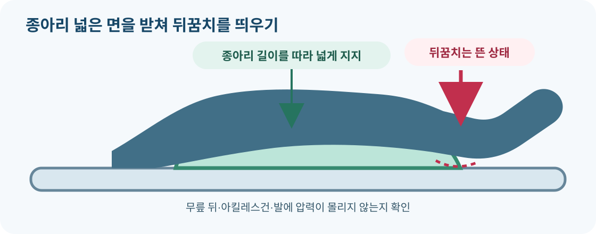

4-14 강의실 · 욕창전문간병사
전문간호 지식 심화 · 간병사 역할과 의료진 판단의 연결
욕창돌봄 전문교육
임상추론 심화 교안
기전을 설명하고, 사정 자료를 해석하고, 중재의 근거와 한계를 판단합니다.
학습 수준과 수업 운영
일반교육의 ‘관찰하고 보고하기’를 넘어, 전문간호 영역의 개념·감별·상처 사정·치료 선택 원리를 다루는 심화 학습안입니다. 전문간호사 시험의 공식 출제범위나 검증된 동등 수준을 뜻하지 않습니다. 상처전문간호사·의료진이 검토하여 실제 교육·평가에 사용합니다.
학습과 수행 권한을 구분합니다. 간병사는 허용된 일상 지원·예방·관찰·기록·보고를 수행합니다. 단계 확정, 깊이·잠식 탐침, 진단, 드레싱·약물 선택, 괴사조직 제거, 음압치료 설정은 해당 자격·업무 권한을 가진 의료진의 판단과 수행 영역입니다. 아래 분류·계산은 가상 자료를 해석하는 연습입니다.
- 선수학습: 욕창돌봄 기본·현장 교안과 손 위생·이동·보고를 복습합니다.
- 각 단원: 용어 설명 → 사례 비교 → 근거 토론 → 모의기록 → 확인 문제 순서로 진행합니다.
- 평가: 10영역 × 8문항의 4지선다형 80문항과 아래 서술·모형 실습을 분리해 확인합니다.
- 오답은 해당 단원으로 돌아가 ‘왜 정답이며 다른 선택은 왜 아닌가’를 말하게 합니다. 온라인 점수는 공식 실기·자격 판정을 대신하지 않습니다.
교육시간·공식 합격선은 운영기관이 확정합니다. 기존 72시간 이수 기록을 이 교안 추가만으로 늘리거나 소급 변경하지 않습니다.
교안 목차와 실제 내용
아래 10개 단원에 각각 설명·사례·자료해석·확인 문제가 들어 있습니다. 목차 항목을 누르면 해당 단원으로 이동합니다. 실제 교육 전에는 담당 교육기관·임상 검토자의 확인을 거쳐 사용하세요.
P01. 병태생리: 피부 표면보다 깊게 생각하기
학습목표: 압력·전단·마찰을 구분하고 동일한 외력이 다른 손상을 만드는 이유를 설명합니다.
- 압력: 지지면과 신체 사이의 수직 부하입니다. 강도만 아니라 노출시간과 조직 내성을 함께 봅니다.
- 전단: 조직층이 서로 다른 방향으로 변위되어 변형되는 힘입니다. 침상에서 아래로 미끄러짐이 대표적인 학습 사례입니다.
- 마찰: 표면이 서로 쓸리는 현상입니다. 피부 장벽을 손상시키며 전단과 동반될 수 있으나 같은 개념은 아닙니다.
- 부동·감각 저하는 압박을 알아차리거나 해소하는 기회를 줄입니다. 저관류·영양 문제·습윤은 조직 내성에 영향을 줍니다. ‘누구나 안전한 고정 압박시간’으로 단순화하지 않습니다.
- 뼈 인접 조직의 손상이 겉 피부보다 심할 수 있습니다. 피부가 온전하거나 통증이 없다는 사실만으로 깊은 손상을 배제하지 않습니다. 일시적인 반응성 충혈과 지속 변화도 구분합니다.
P02. 단계 분류: 색보다 조직과 원인을 읽기
학습목표: 전문가가 제공한 사정 자료를 단계 정의와 비교하고, 불확실한 깊이를 억지로 확정하지 않습니다.
| 분류 | 핵심 개념 | 헷갈리기 쉬운 점 |
|---|---|---|
| 1단계 | 온전한 피부의 국소 비창백성 변화 | 피부가 벗겨져야 욕창이라는 생각은 틀립니다. |
| 2단계 | 진피가 드러난 부분층 피부 손상 | 지방·부육·육아조직이 드러난 전층 손상이나 피부염에 무조건 적용하지 않습니다. |
| 3단계 | 전층 피부 손상; 지방이 보일 수 있음 | 깊은 구조가 드러난 4단계와 구분합니다. 깊이의 cm 값만으로 정하지 않습니다. |
| 4단계 | 전층 피부·조직 손상과 근막·근육·힘줄·뼈 등의 노출 또는 직접 촉지 | 일부 부육이 있어도 손상 수준이 확인되면 ‘분류 불가’만 고집하지 않습니다. |
| 분류 불가 | 부육·가피가 깊이를 가려 실제 손상 범위가 확인되지 않음 | 분류를 위해 간병사가 조직을 제거하지 않습니다. |
| 심부조직 압박손상 | 지속되는 깊은 적색·적갈색·자주색 변화 또는 혈성 물집 등 | 단순 멍·혈관성 손상 등과 원인 감별이 필요합니다. |
단계는 반드시 1→4 순서로 진행하지 않습니다. 치유 중인 4단계를 3→2→1로 역분류하지 않고 원래 단계와 현재 치유 소견을 기록합니다. 기기 관련 피부 손상에는 피부 단계 평가를 적용하지만, 점막 압박손상에는 1–4단계 체계를 적용하지 않습니다.
P03. 감별과 위험도: 점수는 판단의 시작
학습목표: 분포·노출·발생 시점으로 감별할 질문을 만들고, 점수를 임상 사정과 통합합니다.
- 뼈 돌출부와 압박 이력은 욕창 평가의 단서입니다. 실금 후 넓고 불규칙한 미란은 습윤손상을 고려합니다. 접착제 제거 직후의 피부 박리는 접착제 관련 손상을 고려합니다. 이들은 공존할 수 있습니다.
- 차가운 발·혈류 이상·괴사에서는 허혈성 원인을 함께 살핍니다. 간병사가 피부색만 보고 욕창 단계나 혈관 질환을 확정하지 않습니다.
- Braden 척도는 감각인지, 습윤, 활동, 이동, 영양, 마찰·전단 영역을 살핍니다. 총점이 같아도 취약 영역이 달라 중재가 다를 수 있습니다. 공식 도구와 기관 지침에 따라 교육받은 평가자가 사용합니다.
- 입원 시 결과를 계속 고정하지 않습니다. 수술, 부동, 진정, 관류 변화, 새 손상에 맞춰 위험과 계획을 재평가합니다. 점수가 낮아도 현재 손상은 별도로 다룹니다.
- 어두운 피부는 색 변화가 덜 뚜렷할 수 있어 평소와의 차이·온도·촉감·통증도 살핍니다. 자가 움직임은 실제 압력 해소 효과를 확인합니다.
P04. 상처 사정: 수치와 맥락을 함께 해석
학습목표: 측정 자료의 신뢰도를 비교하고, 면적 감소만으로 치유를 단정하지 않습니다. 탐침·깊이 측정은 의료진의 평가 영역입니다.
- 위치·날짜·평가자·길이·너비·깊이·조직·삼출·주변 피부·통증을 구조화합니다. 방향과 방법·단위가 일관되어야 비교가 가능합니다.
- 길이×너비는 불규칙한 윤곽의 실제 면적과 다를 수 있는 근사치입니다. ‘깊이’와 ‘면적’ 단위를 구별합니다.
- 잠식: 가장자리 아래의 조직 손실 공간. 터널: 좁게 뻗은 통로. 시계 방향 표기를 쓰면 12시 등 기준을 정하고 같은 기준을 유지합니다.
- 삼출량은 드레싱 흡수력·교환 간격과 함께 해석합니다. 표면이 작아져도 깊이·잠식·통증이 커지면 단순 호전으로 볼 수 없습니다.
- 사진은 기관 절차·동의·동일 조건·척도 등을 확인하며 개인 메신저로 공유하지 않습니다. 못 본 부위나 미측정값은 정상·0으로 만들지 않습니다.
P05. 체위 변경: 시간표에서 실제 압력 해소로
학습목표: 체위 변경의 효과와 내성을 평가하고 치료 목표 간 충돌을 설명합니다.
- 실제 자세, 목표 부위의 압박 감소, 피부 반응, 시간, 통증과 생리적 내성을 확인합니다. 표에 완료 표시가 있어도 실제 압력이 남으면 재평가가 필요합니다.
- 흡인 예방·호흡 지시를 임의로 취소하지 않습니다. 상체 올리기와 미끄러짐·전단 감소를 팀이 함께 조정합니다.
- 끌지 않도록 적절한 인력·보조도구를 사용하며, 변경 후 관·피부 당김이 남지 않았는지 확인합니다. 사용한 이동 장비는 상시 잔류 설계인지 확인합니다.
- 큰 자세 변경을 견디지 못하면 의료진이 작은 체중 이동·대체 자세·적합한 지지면 등을 검토합니다. 작은 이동만으로 전체 계획을 대체하지 않습니다.
- 거부·통증은 원인과 목표를 논의할 신호입니다. 미시행과 대안·보고를 남기고, 자가 체위 변경은 실제 시연으로 효과를 확인합니다.
근거: 국제 지침 · 체위 변경
P06. 지지면·뒤꿈치·기기: 다른 곳에 압박을 옮기지 않기
학습목표: 제품 이름이 아닌 작동 개념과 환자 적합성을 비교합니다.

- 반응형 지지면: 하중에 반응해 특성이 변합니다. 능동형 지지면: 하중과 독립적으로 특성을 바꿀 수 있습니다. 전원 유무만으로 구별하지 않습니다.
- 침잠·감싸기: 신체를 받치는 접촉 형태를 조절해 부하를 분산하는 개념입니다. 체중·체형·활동·습윤·이동 안전·제품 한계와 함께 선택합니다.
- 뒤꿈치가 떠 있어도 좁은 지지물이 아킬레스건 등 다른 부위를 누를 수 있습니다. 하퇴 부하를 분산하고 기기 맞춤·피부·혈류를 확인하는 계획이 필요합니다.
- 뒤꿈치 보호 부츠는 보행 시 낙상 위험을 평가해야 합니다. 좌석에서는 쿠션뿐 아니라 발 지지·좌석 맞춤·자세·체중 이동·앉는 시간을 봅니다.
- 기기 모양의 손상은 기기 관련 압박을 의심합니다. 예방 드레싱의 추가 두께가 기기 맞춤을 악화시킬 수도 있어 기능과 피부를 함께 재평가합니다.
근거: 지지면, 뒤꿈치, 좌석, 의료기기 관련 손상
P07. 미세환경과 습윤: 촉촉함과 과습을 구분
학습목표: 상처바닥과 주변 피부에 다른 수분 관리 목표가 필요함을 설명합니다.
- 미세환경: 피부와 지지면 접촉 부위의 온도·습도 등 국소 조건입니다. 발한·발열·침구·지지면과 함께 봅니다.
- 침연: 과습으로 피부가 희게 불고 취약해진 상태를 말합니다. 적정한 상처 습윤과 주변 피부 과습 방지는 함께 달성해야 합니다.
- 실금 관련 피부염과 욕창이 공존하면 배설물 노출과 압박을 모두 다룹니다. 부드러운 세정·건조, 지정 보호제·흡수용품을 사용합니다.
- 보호제는 적용 부위와 목적을 구분합니다. 정상 피부 보호용 제품을 상처 안에 임의로 바르지 않습니다. 과도한 패드 겹침은 주름·습윤·지지면 효과에 영향을 줄 수 있습니다.
- 예방 드레싱도 관찰·압력 완화를 대신하지 않습니다. 세게 문지르거나 뼈 돌출 부위를 마사지하지 않습니다.
P08. 영양·관류·통증: 단일 수치보다 종합 사정
학습목표: 주어진 목표의 충족률을 계산하고 동반질환과 치료 부담을 고려합니다.
- 알부민·프리알부민은 염증·질환 등에 영향을 받으므로 단독으로 영양실조를 확정하거나 배제하지 않습니다. 실제 섭취·체중 추세·신체 상태와 질환을 종합합니다.
- 체중 감소율=(기준−현재)/기준×100. 기간, 의도적 감소인지, 부종·체액 변화인지도 확인합니다.
- 영양 목표는 의료진·영양사가 정합니다. 실제 섭취량과 제공량을 구분하고 보충식의 섭취·내약성도 기록합니다. 신장질환·심부전에서는 단백질·수분을 일률적으로 늘리지 않습니다.
- 먹을 수 있는 사람에게 욕창 예방만을 이유로 경관영양을 일률 적용하지 않습니다. 필요·이득·부담·환자 선호와 기기 위험을 함께 고려합니다.
- 안정 시 통증, 움직임·처치 시 통증을 구분해 위치·시각·강도·반응을 전달합니다. 통증만으로 감염을 확정하지 않으며 약물 변경은 의료진에게 맡깁니다.
근거: 국제 지침 · 영양, WHS 치료 지침
P09. 감염과 괴사조직: ‘균 있음’과 ‘치료 필요’의 차이
학습목표: 집락화·국소 감염·전신 악화의 판단 자료를 구분하고 처치 전 확인할 조건을 설명합니다.
- 배양 양성만으로 전신 항생제를 결정하지 않습니다. 주변 염증 확산·통증·삼출·치유 지연·전신 상태를 종합합니다. 냄새 하나로 감염을 확정하거나 배제하지 않습니다.
- 뼈 노출 자체만으로 골수염을 확정하지 않습니다. 전문의가 적절한 검사와 필요 시 골 조직 배양·병리 평가를 판단합니다.
- 건조하고 단단히 붙은 뒤꿈치 가피는 안정성·관류·감염·치료 목표를 확인합니다. 검다는 이유만으로 무조건 제거하지 않습니다. 새 배액·발적·물렁함은 재평가 신호입니다.
- 괴사조직 제거 원리: 자가용해는 몸의 효소와 습윤 환경을 활용하고, 기구를 이용한 제거는 숙련된 시술자의 처치입니다. 적응증·관류·출혈 위험·속도·통증을 고려하며 간병사가 시행하지 않습니다.
- 발열과 새 혼란·퍼지는 염증은 신속한 평가가 필요합니다. 의식 저하·심한 호흡곤란·급격한 출혈은 기록보다 비상 호출이 우선입니다.
근거: WHS 2023 · 감염·골수염·괴사조직 관리, NICE · 항생제·처치 판단, NHS · 악화 징후
P10. 드레싱·경과 평가·돌봄 목표 통합
학습목표: 제품의 역할과 한계를 설명하고 상처·환자·운영 지표를 구분해 해석합니다.
- 드레싱은 단계 번호만이 아니라 삼출·상처바닥·주변 피부·통증·교환 부담에 맞춰 선택합니다. 흡수성이 높다고 모든 상처에 적합하지는 않습니다.
- 과도한 건조·달라붙음·제거 시 통증은 제품과 교환 계획을 재평가할 단서입니다. 간병사가 제품을 임의로 바꾸지 않습니다.
- 음압상처치료는 모든 욕창에 일률 적용하지 않습니다. 적응증·금기·삼출·목표·부담을 의료진이 검토하며 압력 완화·영양·감염 관리 등을 대신하지 않습니다.
- 치유가 정체되거나 악화하면 지속 부하·관류·감염·영양·실행 가능성과 다른 원인을 재검토합니다. 면적 감소만으로 전체 성공을 확정하지 않습니다.
- 완화적 돌봄은 편안함과 선호를 포함해 목표를 논의합니다. 퇴원 시 실제로 수행 가능한 지지면·처치·피부 관찰·연락 계획을 인계합니다.
- 예방 성과의 단순 건수는 대상자 수·위험도·기간·입원 시 손상 여부·보고 방식과 함께 해석합니다. 기록 누락은 성과 개선이 아닙니다.
통합 사례 토론과 강사 평가표
사례 A · 당뇨·혈류 이상·뒤꿈치 가피
피부가 차고 감각이 낮으며 뒤꿈치에 건조한 가피가 있습니다. ‘제거하면 좋아진다’는 제안의 문제를 설명하세요.
평가 요소: 관류·감염·안정 가피·깊이 불확실성 구분, 압력 완화 계획, 전문 평가 연결, 임의 제거 금지. 사진만으로 깊이나 감염을 확정하면 보충학습합니다.
사례 B · 엉치 손상·실금·상체 올리기
경관영양 환자가 자주 미끄러지고 회음부 미란과 엉치 국소 손상이 함께 있습니다. 한 원인·한 중재로 충분한지 설명하세요.
평가 요소: 습윤손상과 압박손상 공존 가능성, 흡인 예방과 전단 감소의 균형, 실제 체위·지지면·피부·기록의 통합. 임의로 상체를 낮추는 답은 수정합니다.
사례 C · 표면 축소·깊이 증가·발열
면적은 줄었으나 잠식과 통증이 커지고 발열·식사 감소가 있습니다. 호전 여부와 우선순위를 설명하세요.
평가 요소: 복합 경과 해석, 감염·전신 상태의 신속 평가, 섭취·관류·부하 재검토, 호출과 기록 순서. 면적 하나로 호전이라 단정하지 않습니다.
| 평가 영역 | 확인 내용 | 강사 기록 |
|---|---|---|
| 지식·감별 | 단계 정의·유사 손상·불확실성 설명 | 충분 / 보충 / 미확인 |
| 임상추론 | 사정 자료 → 가능한 문제 → 추가 확인 → 우선순위 | ________________ |
| 모형 실습 | 동의·인원·도구·압력 완화·관 안전·반응 확인 | ________________ |
| 기록·인계 | 실제 시각·사실·미시행·보고·다음 계획 | ________________ |
| 역할 경계 | 학습 지식과 실제 처치 권한 구분 | ________________ |
학습자: __________ 강사: __________ 교육일: __________
보충할 영역·재평가일: __________________________________
근거 확인일 2026.10.06. 국제 압박손상 지침의 해당 장, NICE·NHS 및 WHS 자료를 참고한 창작 교육안입니다. 각 문항은 교육용 가상 사례이며 개인별 처방이 아닙니다. 기존 PDF·음성·영상은 이 심화 내용을 포함하지 않습니다.